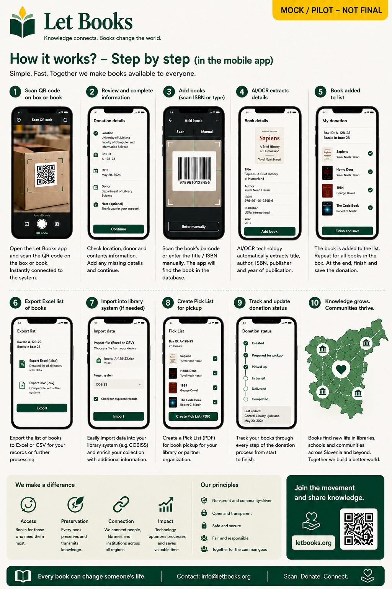

This guide describes the intended workflow direction of the project, not a production deployment. The static documentation site and browser-only local demo are real, but hosted multi-user infrastructure does not exist yet.
Guide for individuals
Catalog your first box without turning it into a major project.
This guide is for private donors, families, volunteers, and small organizations that want to preserve serious books and make them easier to review, offer, and retrieve later.

When this guide is for you
- You have books at home, in storage, or in an office.
- You want to know what is in each box before offering anything.
- You want a phone-first workflow with less typing.
- You may donate to one or more libraries later.
What success looks like
- You can scan one box and see its books.
- You can add another book in seconds.
- You can export a clean list for review.
- You can find the wanted books again when it is time to pick them.
Your first box
Start with a location name you can understand later. A good code is short, stable, and tied to a real place.
Name the location
Example: Basement / Shelf 2 / Box 14. The exact wording matters less than being consistent.
Attach a QR label
Scanning the label should open the box detail page so you always know where new intake belongs.
Use the box as your working context
Add books directly into the current box instead of writing location details over and over.
Add books quickly
The fast path should support one-handed work near shelves and boxes, with enough detail to be useful later.
Take a cover photo
Use the cover as the main visual reference for browsing inside a box.
Scan or enter ISBN
If it is visible, use it. If not, save first and enrich later.
Save and continue
Quick intake should never require full metadata before the next book.
Add title pages if needed
When a book is important or unclear, add title and copyright pages for later review.
Capture condition notes
Mark whether the copy is good, acceptable, or needs closer inspection.
Keep moving
Use repeat actions such as save draft or save and add next.
What information matters most
- Title and author if known
- Year or edition when visible
- Condition of the physical copy
- Exact storage location
- Private notes that help you find or inspect the book later
What can be added later
- Metadata suggestions from OCR
- External catalog matches
- Translation suggestions
- Richer historical context and associations
Export for library review
Create a donation batch from the books you want to offer. Export a spreadsheet with stable item IDs so the library can mark wanted, maybe, or not wanted without relying on title matching.
Find requested books again
After decisions are imported, the system should group requested copies by room, shelf, and box. That is the difference between a useful inventory and a list you still cannot act on.
Privacy and trust
Your exact storage location, private notes, and home details should stay private unless you choose to share limited information. Libraries need useful metadata, not your private storage map.
AI as assistant, not authority
If OCR or metadata matching is enabled later, treat it as a suggestion. Serious collections often contain older editions, multilingual material, annotations, and incomplete publishing details.
Example scenario: A family inherits a professor's engineering library. They label boxes, add cover photos, mark damaged copies, export one batch for a university library, and later retrieve the requested books from the exact shelves instead of reopening every carton.